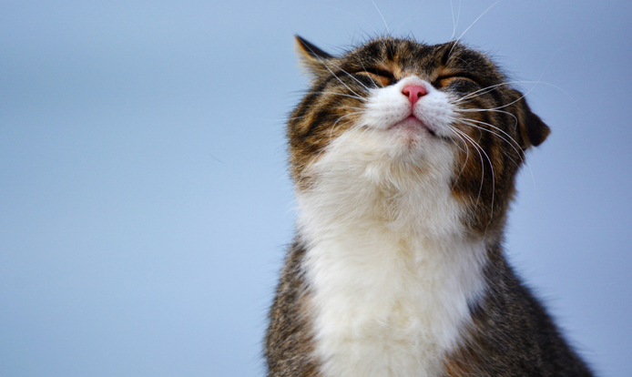

Macskák
Fajtái
- Bengáli
- szíámi
- házi
- perzsa
- és még sok más
Általanos tuddnivalók
Számos különleges külsejű fajta jött létre, melyek egyes jellegzetességei a kutyafajtáknál is felbukkannak.
Azonban míg a kutyákat többféle célra kezdték felhasználni (például terelő és kísérőkutyák, őrkutyák, kotorékebek, mentőkutyák, szánhúzó kutyák),
addig az új macskafajtákat továbbra is házikedvencnek és rágcsálóirtónak szánták, ezért küllemükben nem térnek el annyira extrém módon egymástól.
A fajtákat nagyrészt az európai házi macskából avagy az európai rövid szőrűből és az ázsiai rövid szőrűekből (a recesszív Cs gént örökítő keleti rövid szőrűből és sziámiból) alakították ki.
A modernebbnek számító fajták leginkább az Amerikai Egyesült Államokból származnak, mivel az ottani tenyésztők szívesebben kísérleteznek.
Gyakran használják fel az amerikai rövid szőrű fajtát,amely valószínűleg az európai rövid szőrűtől származik.
A vizsgálatok alapján a hosszú szőrű fajták ősei a török angóra és a török van.
A félhosszú szőrű fajtákból sokáig tartó szelekciós folyamat eredményeként alakultak ki a hosszú szőrű perzsa macskák.
A szőrhossz változásának genetikai hátterében a recesszív l gén áll.
Tiltott ételek
- csokoládé: a benne lévő teobromin szívműködési és idegrendszeri zavarokat válthat ki, akár halált is okozhat
- kávé, energiaital, tea: a koffeintartalom általános felfokozottságot, akár görcsrohamokat is okozhat
- hagyma, fokhagyma: emésztőszervi panaszokat, hosszú távon vérszegénységet okoz és mivel a legtöbb felvágott és készétel is tartalmazza, azok is csak kis mennyiségben adhatók
- nyers hús, nyers tojás: veszélyes fertőzéseket, szalmonellát, a nyers és nyersen tartósított sertéshús (kolbász, szalonna) halálos Aujeszky-betegséget (álveszettség) okozhat.
- vaj, margarin, szalonna: nagyobb mennyiségben hányást, vagy hasnyálmirigy gyulladást okozhatnak
- tej: a tejcukor (laktóz) emésztési problémákat, hasmenést okozhatí
- xylitol: vércukorszint-esést okozhat
- alkohol: már kis mennyiség is súlyos idegrendszeri zavarokat okoz
- zöld és nyers paradicsom, paprika és padlizsán, zöldes héjú krumpli: a szolanintartalom miatt nem adható és szolanin az emberre is káros hatású
- szőlő, különösen mazsola: súlyos, akár halálos veseműködési zavarokat okoz
- nyers tonhal és lazac: veszélyes baktériumfertőzést okozhat
- szálkás hal: a szálka az emberhez hasonlóan megakadhat a torokban
- felvágottak: a benne lévő fűszerek miatt csak kis mennyiségben adhatók
- kutyakonzerv, kutya száraztáp: noha nem mérgező, az összetétele nem megfelelő a macskák számára, fehérjetartalma alacsony, kizárólagosan adva súlyos hiánybetegséget okoz.
- mogyoró, lekvár, savanyúság
Kép egy macskáról

Vicces videó macskákról
Vicces videjó